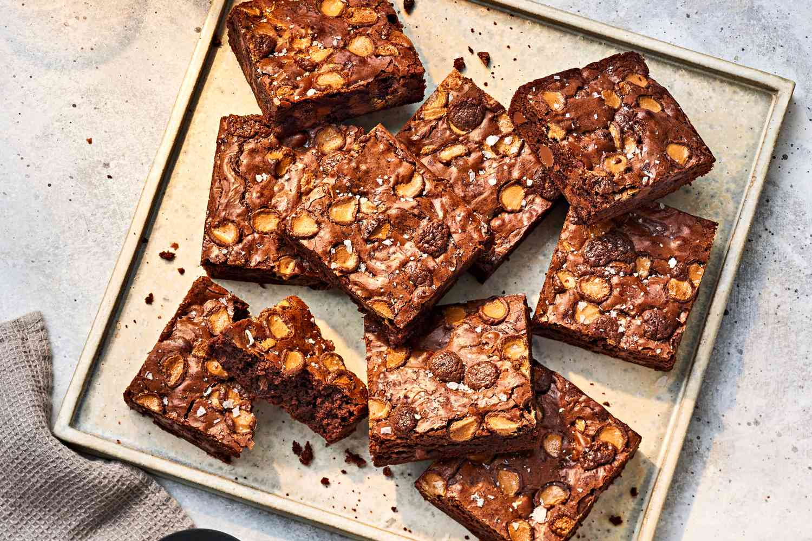

Brownies are a beloved American dessert known for their rich, fudgy texture and intense chocolate flavor.
These decadent treats are typically made from a combination of butter, sugar, eggs, flour, cocoa powder,
and sometimes chocolate chips or nuts. Brownies are often baked in a square or rectangular pan and then cut into individual servings.
They're perfect for satisfying a chocolate craving or as a delightful indulgence for dessert. Brownies can be enjoyed on their
own or served warm with a scoop of vanilla ice cream for an extra treat. With countless variations and add-ins, brownies are a
versatile dessert that can be customized to suit different tastes and preferences. Whether you prefer them dense and chewy or
light and cakey, brownies are sure to be a crowd-pleaser at any gathering or simply enjoyed as a sweet treat at home.
LET'S START WITH IT
INGREDIENTS:
- 1 cup (2 sticks) unsalted butter
- 2 cups granulated sugar
- 4 large eggs
- 2 teaspoons vanilla extract
- 1 cup all-purpose flour
- ¾ cup unsweetened cocoa powder
- ½ teaspoon salt
- ½ teaspoon baking powder
OPTIONAL INGREDIENTS
- 1 cup chocolate chips (semisweet or dark)
- 1 cup chopped nuts (walnuts or pecans)
INSTRUCTIONS/STEPS:
- Preheat your oven to 350°F (175°C). Grease a 9x13 inch baking pan or line it with parchment paper.
- In a medium saucepan, melt the butter over low heat. Once melted, remove from heat and stir in the sugar until well combined.
- Beat in the eggs one at a time, then stir in the vanilla extract.
- In a separate bowl, sift together the flour, cocoa powder, salt, and baking powder. Gradually add this mixture to the wet ingredients, stirring until just combined. Be careful not to overmix.
- If desired, fold in the chocolate chips and nuts.
- Pour the batter into the prepared baking pan and spread it out evenly.
- Bake in the preheated oven for 25-30 minutes, or until a toothpick inserted into the center comes out with a few moist crumbs. Be careful not to overbake, as brownies should be fudgy and moist.
- Allow the brownies to cool completely in the pan before slicing and serving.
Enjoy your homemade brownies!
GO BACK